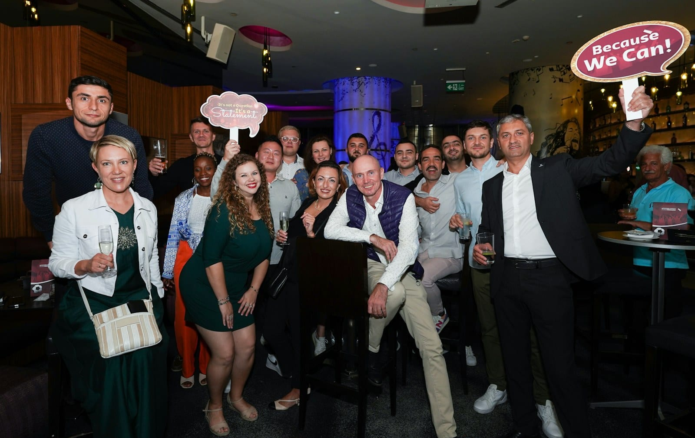

CORPORATE
Client appreciation event ideas in Denver
Here are eight ways to thank your clients without presenting to them, with notes for financial advisors, realtors and law firms.

- A great client appreciation event gives people plenty of time to talk.
- Financial advisors, realtors and law firms tend to host different events. Advisors usually pair a short program with a longer social half, realtors invite families in the daytime, and law firms host small dinners.
- Live music makes an evening feel thoughtfully planned and still leaves space for people to talk, which is why it works with most of the other ideas.
- A jazz trio or acoustic duo for a dinner can run $500 to $3,000 across Colorado, and that's a good range to bring to your budget conversation.
You know the moment when you finally meet a client you’ve only ever emailed? A client appreciation event gives you more of those moments, with a drink in hand and a reason to stick around a little longer. Nobody has to sit through a pitch.
That can be harder to plan than a sales dinner, because you don’t have an agenda to lean on. We’ve got eight ideas for a client event in Denver, and we’ve ranked them by how much conversation each one allows. We’ve also added notes for the three groups who host these most often. Let’s start with prices. In the Colorado market, a jazz trio or acoustic duo for a dinner can run $500 to $3,000, and a cover or jazz band for a corporate event can run $2,500 to $8,000. Want to learn more about live music prices? Take a look at our pricing page.
The client dinner with live music #
This is the default, and it works for most client lists. Book a private dining space and put a duo in the corner, playing standards under the conversation. The music fills the silence when people arrive and don’t know anyone yet, and it gives the evening some structure without needing a speech.
We’ll keep dinner music at a volume where your guests can talk without leaning in. Any louder and your clients may end up half shouting over dinner. Learn more about planning one on our client dinners page.
The chef's counter #
Eight to twelve people sit at a counter and watch the food get made. It’s the format on this list with the most conversation, because there’s a shared thing to look at whenever the talking pauses, and it’s the right size for the short list of clients you can’t afford to lose. Denver has the restaurants for it, and most of them will do a set menu and a private counter on a weeknight.
It won’t stretch to fifty guests, though. Past about a dozen people, you’re really planning a dinner in a private dining space, which is the idea above.
The tasting #
It could be whiskey, wine or a distillery tour, with a guide who’s good at talking. A tasting gives your guests something to do and something to have an opinion about, which really helps at the start of an event, when people are still warming up. Denver’s distilleries and the tasting spaces in RiNo host these all the time.
Live music works well with a tasting, as long as it stays quieter than the guide. We usually suggest a solo musician during the tasting and a duo after it.
The museum or gallery evening #
A private evening in a gallery is a nice change for clients who’ve already been to plenty of client dinners this year. The art gives your guests an easy way to start talking, and the venue itself shows how much you value them, so you don’t have to say it.
These venues have their own event calendars and vendor rules, so it’s worth asking about both first. Ask about the venue’s sound policy before you plan the music, because a gallery floor is a hard surface, and the decibel limit can decide how big an act you can book.
The suite at the ballpark #
This is the most forgiving format on the list. A game lets your guests come and go, chat on and off, and leave early without anyone thinking twice. It’s also the one that works when your client list spans a wide range of ages and interests, because nobody has to enjoy the same thing.
It’s a poor fit for a firm whose message is precision and calm. Think about who’s on your client list before you book it.
The seminar with a reception after it #
Start with forty-five minutes of something worth knowing, then offer food, drinks and music for twice that long. The program gives people a reason to accept the invitation, and the second half is where you get to thank them. The most common problem is that the program runs long, the social half gets cut, and guests leave feeling talked at.
Set a firm end time for the talks, and have the music start as soon as the slides come down. When a duo starts playing, everyone knows the program is over, and nobody has to announce it.
The family afternoon #
This one happens outdoors in the daytime, and children are welcome. You might go with pumpkins in October or ice cream in July, at a park or a brewery patio with a lawn. This is a different kind of thank-you. It shows you know your clients, and it reaches the people who can’t make evening events because they’re home with their kids.
For music outdoors, we’d suggest one or two musicians at a volume people can easily talk over, with power run to a covered spot. Colorado weather can turn fast, and instruments and electronics don’t do well in the rain, so we’ll work out an indoor option with you ahead of time.
The open house at your own office #
This may be the most affordable idea here, and it’s easy to overlook. It also gives your clients a real look at your firm. Clear the main floor, bring in a caterer, and put a solo guitarist in a corner. You can book an hour of music on its own, and a solo musician fits an office floor without moving the desks.
It also solves the parking question, because your clients already know where to park.
| The idea | Guests | What it asks of them |
|---|---|---|
| The chef's counter | 8 to 12 | Show up hungry and talk to the person beside them |
| The client dinner with live music | 20 to 80 | Sit down for two hours and enjoy it |
| The open house at your office | 30 to 100 | Drop in on the way home |
| The tasting | 20 to 60 | Have an opinion about something |
| The museum or gallery evening | 40 to 200 | Look at something first, talk second |
| The seminar with a reception after it | 40 to 150 | Learn something, then stay |
| The family afternoon | 50 to 300 | Bring the kids |
| The suite at the ballpark | 12 to 40 | Just show up and enjoy the game |
Client appreciation event ideas for financial advisors #
A financial advisor’s event usually has two halves, and the second one matters more. The invitation usually needs a reason, so you might open with a market update, a guest economist or a tax-year briefing, and then move on to the social part of the evening. Spouses often come, too. Your audience may be older than you expect, so the venue’s acoustics matter more.
That’s a good reason to book live musicians rather than a playlist for these events. A duo playing standards can stay at a volume where people can hear each other all night, while a phone plugged into a sound system tends to get louder as the evening gets busier. Book the music for the social half, and we can have it start just as the program wraps up.
Client appreciation event ideas for realtors #
A realtor’s client list is different. It includes past clients, referral partners, lenders and title people, spread across the Front Range and across a decade. The events that work best are daytime ones with families, and ones tied to a holiday or a time of year people already celebrate. You could try a pie giveaway before Thanksgiving, a movie on a lawn or the family afternoon above.
The music for these can stay in the background. We’d suggest one or two acoustic musicians playing covers people know, and your guests are welcome to sing along. A realtor client event is closer to a private party than to a corporate program, so take a look at our private parties page to learn more.
Client appreciation event ideas for law firms #
Law firms usually host small, formal evenings. A dinner for a few referral partners in a private dining space can do more for a practice than a big reception, and a firm’s partners generally know it. Popular venues include private clubs like the University Club of Denver and the Denver Athletic Club, and hotels with private floors like the Brown Palace and the Oxford.
Two things tend to slow down a law firm’s booking, and neither is choosing the music. One is vendor onboarding, which can take a while depending on your finance team, so it helps to start as soon as you have a shortlist. The other is the certificate of insurance a club asks for before it will confirm the date. You can learn more about both on our client dinners page.
Where live music fits in a client evening #
Ask a group of planners what to do at a client evening that isn’t the usual, and the answers that come back are magicians, mentalists, tarot readers and casino tables. Those formats get recommended because they give guests a reason to stop, gather and then talk to each other, without commanding the whole evening or putting anyone on the spot.
Live music does that job from the corner, and it does it for the whole night. A duo playing softly enough for easy conversation is a lovely touch for a client evening.
Our artists have played for Amazon, NBCUniversal, Charles Schwab, Kroger, the Denver Art Museum, Sheraton, Hyatt, the Washington Nationals, Casa Bonita and Monarch Casino Resort Spa Black Hawk. The best fits for a client evening are usually small. Check out our jazz duo for standards at a dinner, our acoustic duo for covers your guests will know, or our solo guitarist for an office or a tasting.
We got this price from published 2026 market guides in September 2026. We quote each date one-by-one.
Planning a Denver client event only takes a few steps. Pick one of the eight ideas above and hold the venue. Then ask the venue about its sound policy and when the musicians can bring in their gear, and book the music around those answers. Want to see live music costs across Colorado, size by size? Our cost guide has them, and our technical page lists the space and power needs a venue may ask about.